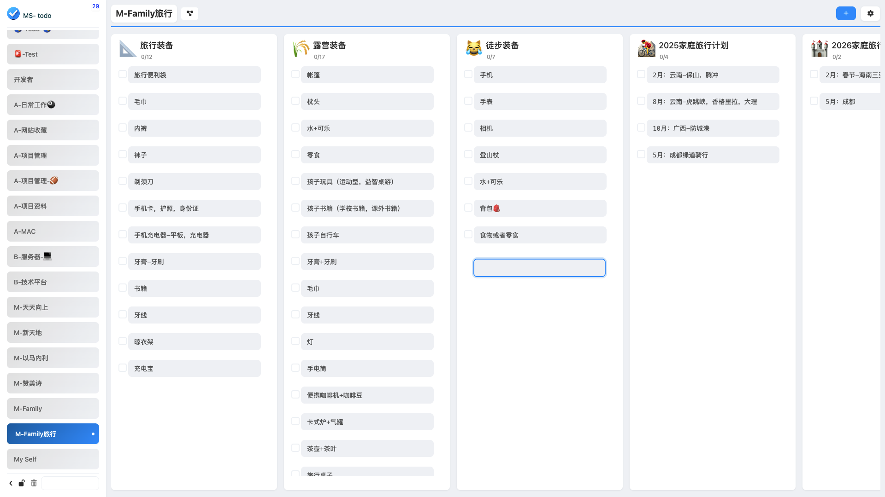
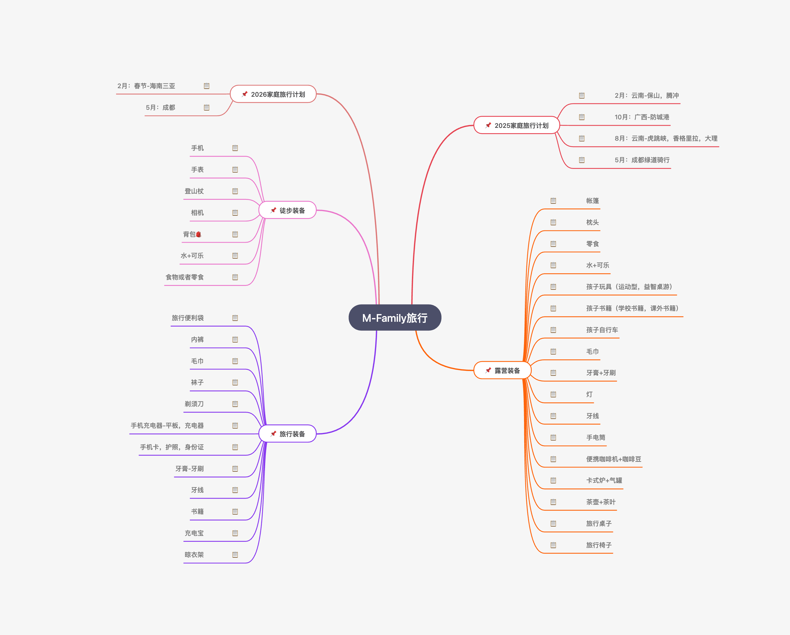
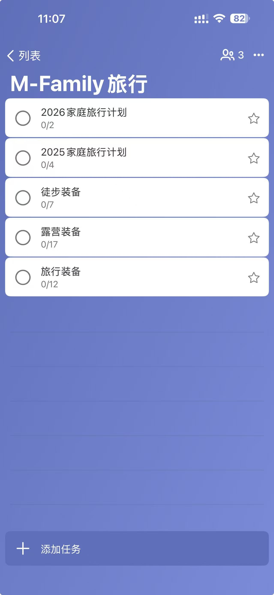
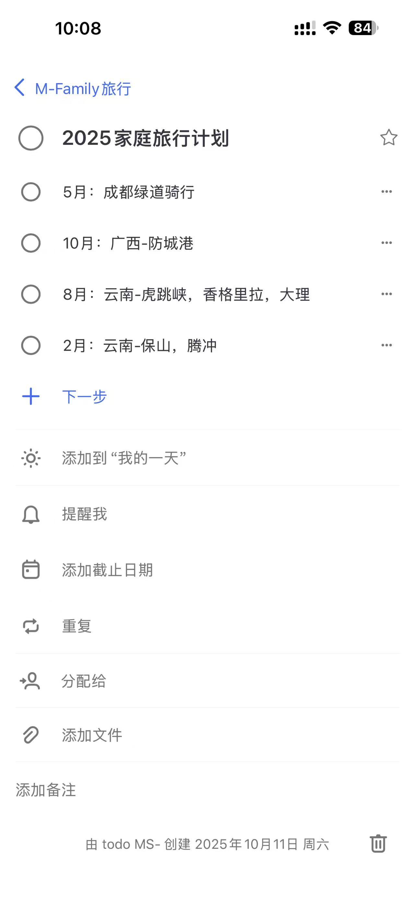
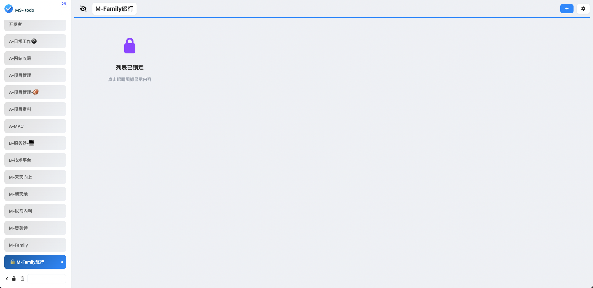

Local-First · 离线优先 · 智能同步 · 思维导图 · 二级隐私锁
采用 Local-First 架构，UI 操作实现零延迟反馈，彻底告别原生网页版的加载等待感。百万级任务流畅运行。
适配 Windows 11 设计语言。支持自动暗黑模式、智能任务图标匹配与丝滑的侧边栏交互。30+ 颜色主题自由切换。
内置中国区与国际区加速配置，针对性解决国内环境下登录缓慢与同步断连的顽疾。智能路由，自动切换最优节点。
基于 Cross-tab Locking 机制，无论开启多少浏览器窗口，均能确保同步任务有序进行，彻底杜绝冲突与重复同步。
仅同步变更数据，配合指数重试算法，在网络波动环境下亦能保证任务百分百触达云端。流量消耗降低 90%。
支持全功能离线编辑。无网络时自由增删改查，待联网后自动执行智能差分合并同步，数据永不丢失。
一键将待办列表转化为思维导图，支持多级子任务展示，让复杂项目脉络清晰可见。支持导出为 PNG/PDF。
支持为特定列表设置本地二级密码。即使电脑处于解锁状态，你的私密任务依然固若金汤。内容一键隐藏。
深度优化的工作流，让任务管理成为一种享受


30+ 精心调校的色彩方案，总有一款适合你
沉稳专注
创意灵感
清新自然
热情活力
温暖积极
清爽治愈
深邃专业
低调纯粹

任务、子任务、步骤
手机提醒 · 准时触达
实时双向同步
步骤明细不掉队
离线编辑，联机同步
微软账号直连所有数据均通过微软官方API与手机App无缝打通，无第三方存储
我们深知待办事项往往包含个人敏感信息。MS-ToDo 采用以下技术保障您的数据安全：

现代 Web 技术打造，稳定可靠
本地数据存储
微软官方接口
Worker 代理
思维导图引擎
安全认证
你可能想了解的
完全免费开源，所有核心功能均可永久免费使用。打赏仅用于支持作者域名维护和持续开发，完全自愿。
是的，MS-ToDo 是微软待办的增强插件，需要登录微软账号同步您的任务数据。所有数据仍归属于您的微软账户。
完全可以！MS-ToDo 采用 Local-First 架构，离线时所有操作（增删改查）均正常工作，联网后自动同步到云端。
点击页面右下角的语言切换按钮即可在中文和英文之间切换。插件内的语言设置可在设置菜单中调整。
是的，所有数据通过微软官方 API 同步，您在插件中的操作会实时同步到微软待办官方 App 和网页版。
插件内置双区调优功能，登录时选择「中国版」即可使用国内加速节点，显著提升登录和同步速度。
加入上万名用户，让新标签页不只是空白，而是你的效率起点